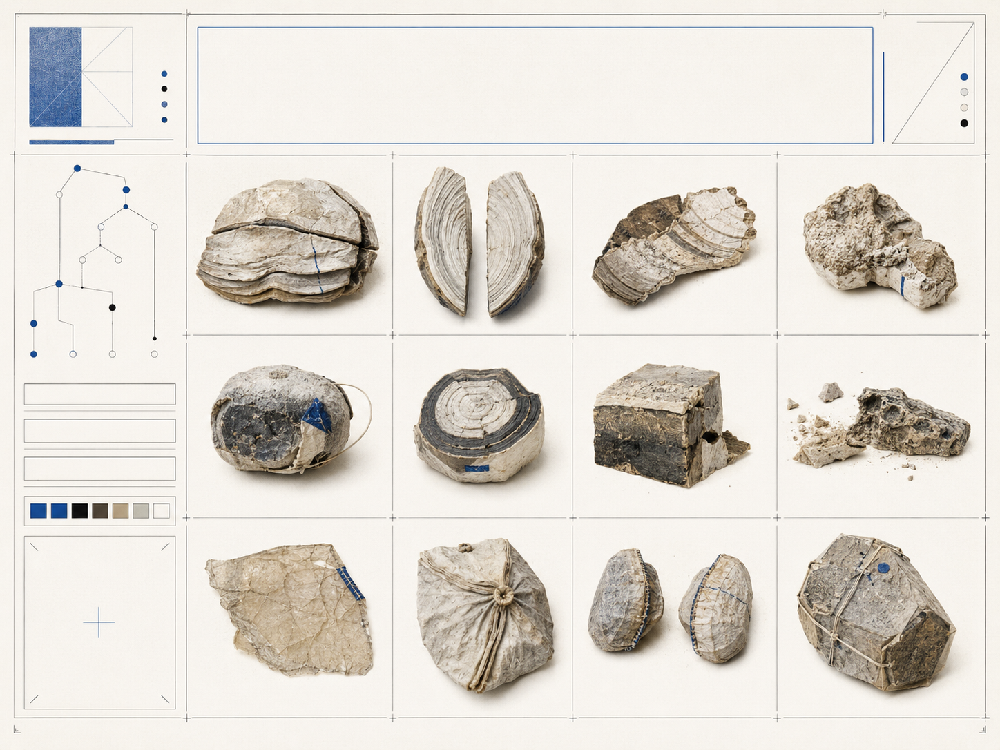
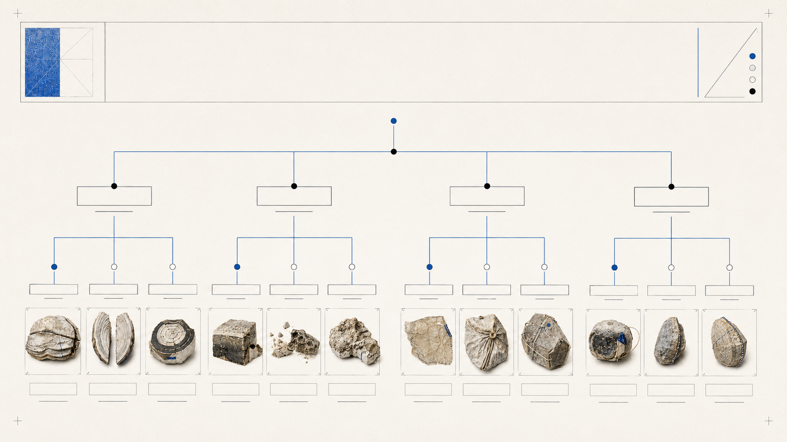
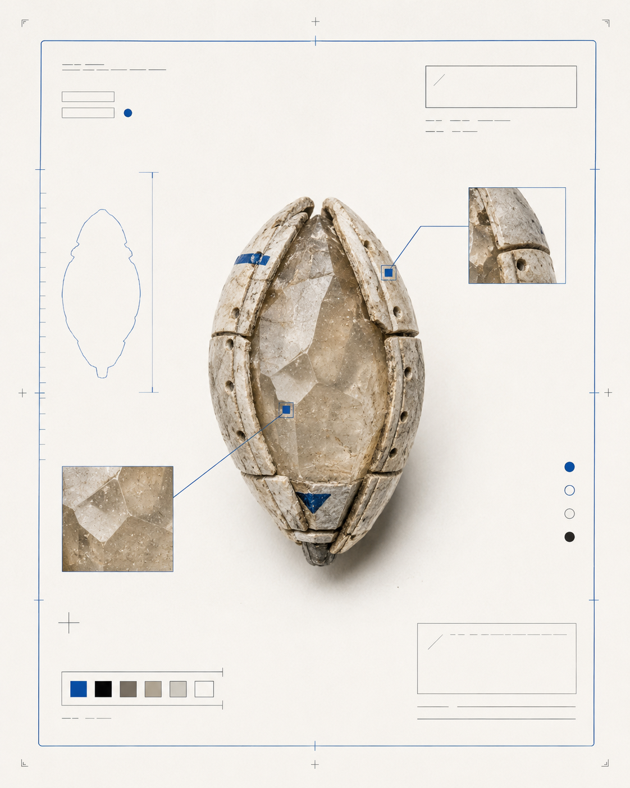
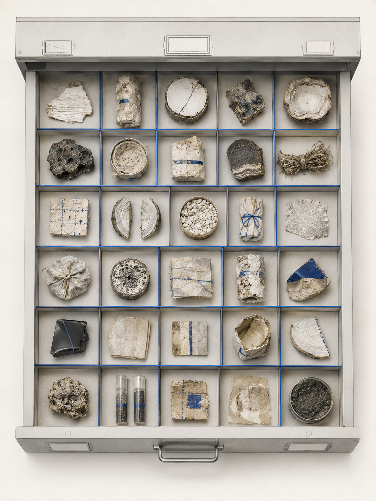
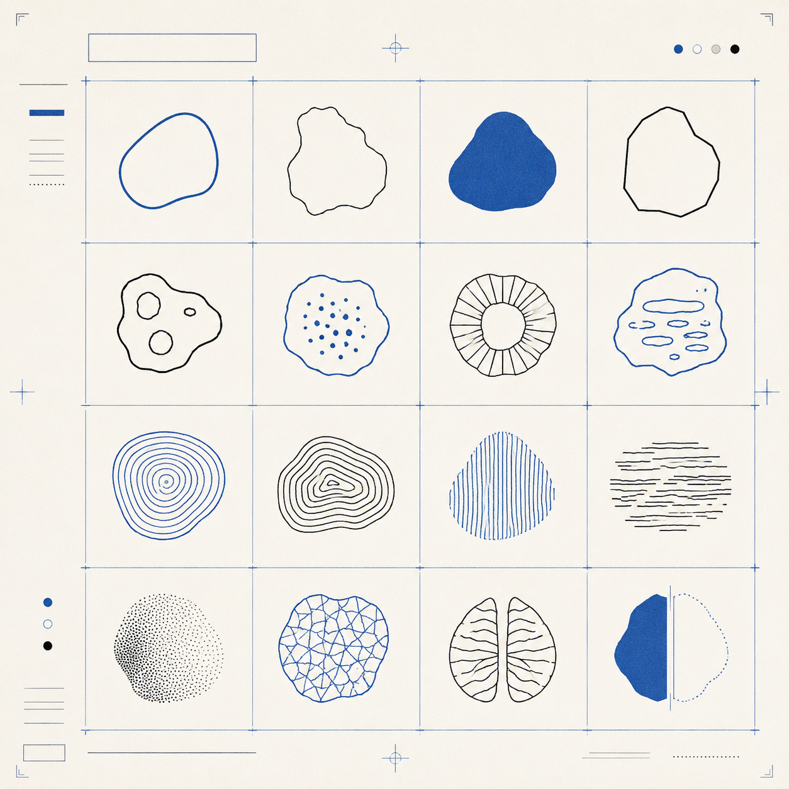

视觉方法 / PROCESS
过程推演展示形态特征如何被拆分、比较并重新归组，同时保留规则细分与修订记录。
A07 · SYSTEM
虚构分类学
为不存在的标本建立可信分类系统，观察制造知识权威的流水线工程。

项目以不存在的标本为研究对象，依据轮廓、表面纹理、附着结构与损坏程度建立编号、层级和分支规则。通过图谱、标签、关系图与保存记录，将形态信息整理为一套自成体系的视觉系统。最终结果介于自然史档案与制度化图表之间，用看似可信的秩序讨论分类如何制造知识、权威与排除。
过程推演展示形态特征如何被拆分、比较并重新归组，同时保留规则细分与修订记录。
先为每件事实上不存在的标本设定编号，再从轮廓、纹理、损坏和保存方式中提取特征。实际编排时，发现规则越细，例外就越多，因此保留了部分矛盾和修订痕迹。



